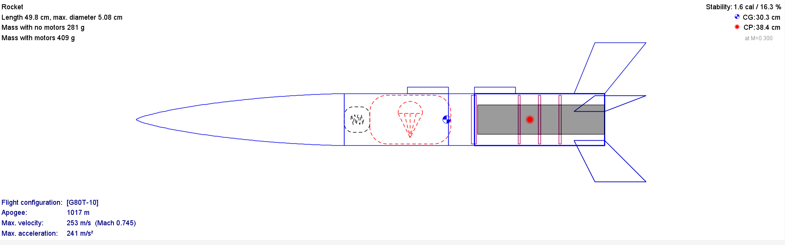
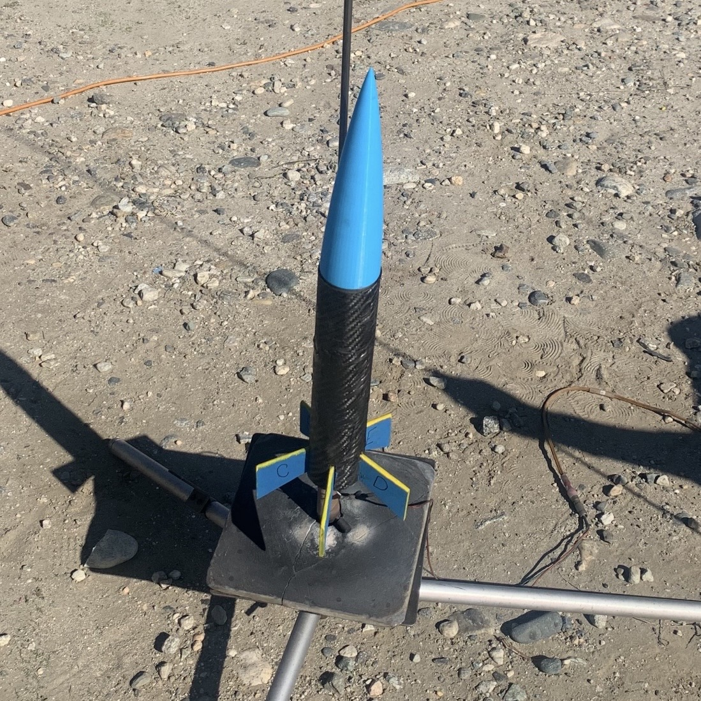

projects
current
ML @ Sensing and Robotics for Infrastructure Lab at UCLA
Developing and evaluating deep learning-based optical flow and point cloud registration (LiDAR) methods for near–real-time monitoring of geohazard-induced ground motion; training RAFT-based optical flow networks to achieve sub-pixel displacement estimation from optical satellite imagery for earthquakes and landslides. Fine-tuned RAFT and a CNN patch-based displacement model on the FaultDeform synthetic satellite dataset using domain-adaptive training strategies, and applied both models to real WorldView-2 pre/post-earthquake imagery to estimate fault displacement at centimeter-scale resolution.
PyTorch
RAFT
Optical Flow
Remote Sensing
Fine-Tuning
Satellite Imagery
NumPy
rasterio
CUDA

.png)
Rocket Design Lab + UCLA Rocket Project
Designed and built two rockets as part of UCLA Rocket Project: a 3D printed rocket as an introduction to flight simulation and CAD, and a group mid-powered rocket targeting a 3,000 ft apogee. Used OpenRocket to model and optimize stability, mass distribution, and flight trajectory, targeting a caliber stability of 1.5 to 2.5 and an off-rail speed of 75 ft/s. Designed key structural components including trapezoidal fins, centering rings, and a Von Karman nose cone. Manufactured parts using carbon fiber layup, laser cutting, and 3D printing, and a parachute recovery system for full rocket retrieval. Manufactured and designed an engine centering ring for Prometheus hybrid-powered rocket using SolidWorks and FEA analysis to optimize structural performance and ensure proper engine alignment under flight loads.
OpenRocket
Onshape
CAD
3D Printing
Carbon Fiber Layup
Laser Cutting
Avionics Integration
Aerodynamics
Sanding
Machining
Parachute Recovery


Adversarial Robustness in Federated Learning - Springer 2025
Analyzed label-flipping attacks on CNN federated learning models against 7 architectures (MLR, SVC, MLP, RNN, Random Forest, XGBoost, LSTM), varying adversarial client participation (10–100%) and label-flip rates (10–100%). Found CNNs gain slight accuracy in small federated settings but degrade rapidly at scale. Peer-reviewed and published in Machine Learning, Deep Learning, and AI for Cybersecurity (Springer, 2025).
Federated Learning
CNN
PyTorch
RNN
Python
Scikit-learn
Read Paper ↗
ASL Real-Time Translation Tool
Developed a CNN-based ASL classifier (91.5% accuracy) and deployed real-time detection for 32+ signs using computer vision. Trained across 4 iterative models, scaling to 3,000+ images and 33 classes, achieving mAP of 0.958. Earned 4th place at Alameda County Science & Engineering Fair.
Python
YOLOv8
CNN-LSTM
OpenCV
Roboflow
Read Paper ↗
RAG Therapist Chatbot
Built a context-aware AI therapy chatbot that ingests PDFs into a vector database and retrieves relevant passages to generate grounded, empathetic responses in real time.
Python
LangChain
Gemini API
ChromaDB
Gradio
GitHub ↗
Desmos AI Assistant
Shipped a Chrome extension embedding an AI assistant directly into the Desmos graphing calculator: solving equations, analyzing graphs, and delivering step-by-step explanations without leaving the tool.
JavaScript
Chrome Extensions API
HTML/CSS
GitHub ↗
Blockchain Civics Platform
Deployed an Ethereum-based civic engagement platform enabling anonymous government feedback and on-chain voting: removing identity barriers to public participation.
Ethereum
Solidity
HTML/CSS
GitHub ↗